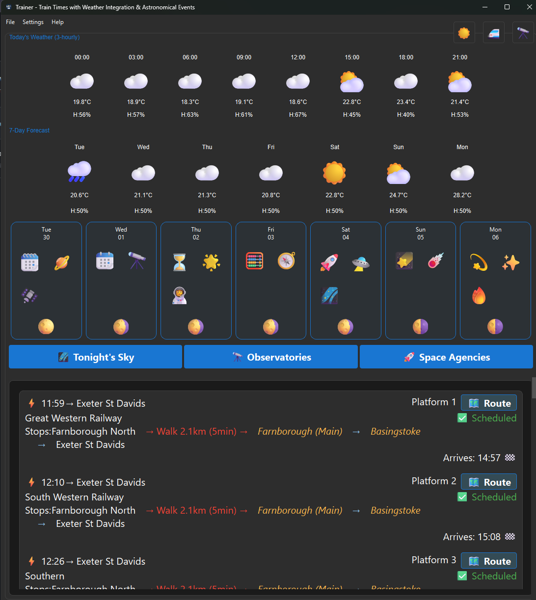

Trainer
A local-first desktop companion for the UK railway. Real-time departures and route planning, with the weather for your journey and the night sky above it, in one clean dark interface.
Builds are published on the releases page as they ship.
Three things, done properly
Trainer brings train times, weather and astronomy together so you can plan a journey without leaving the app or handing over an API key.
Train information
Real-time departures across a wide window, with the detail you actually need.
- Platforms, delays, cancellations and operator
- Route planning with interchange support
- Calling points and full service detail
- Automatic refresh at a configurable interval
Weather integration
The forecast for where you are going, with no account and no key.
- Current conditions and a seven-day outlook
- Automatic location via Open-Meteo
- Weather for the destination, not just home
- Graceful handling when a service is down
Astronomy
The sky over your journey, calculated locally where it counts.
- Accurate moon phases with a hybrid service
- A seven-day astronomical outlook
- Sunrise, sunset and celestial events
- No API keys required
A considered desktop app
Built to live on your machine and respect it.
- Dark and light themes, switched with a key
- Full keyboard navigation
- Local-first: your data stays on your machine
- Native installers for every platform
See it in action
The dark Material interface, with departures, the journey forecast and the night sky side by side.

Install on your platform
Grab a build from the releases page, or build from source with the development guide.
Per-user installer
A graphical installer that needs no administrator rights, registers a normal uninstall entry and adds shortcuts.
TrainerSetup.exe
Download for Windows
Apple Silicon DMG
A self-contained app bundle with Python and Qt frozen in, delivered as a drag-to-install disk image.
trainer-macos-arm64.dmg
Download for macOS
Flatpak
A Flatpak bundle for the KDE runtime that runs on any modern desktop.
flatpak install --user trainer.flatpak
Download for Linux